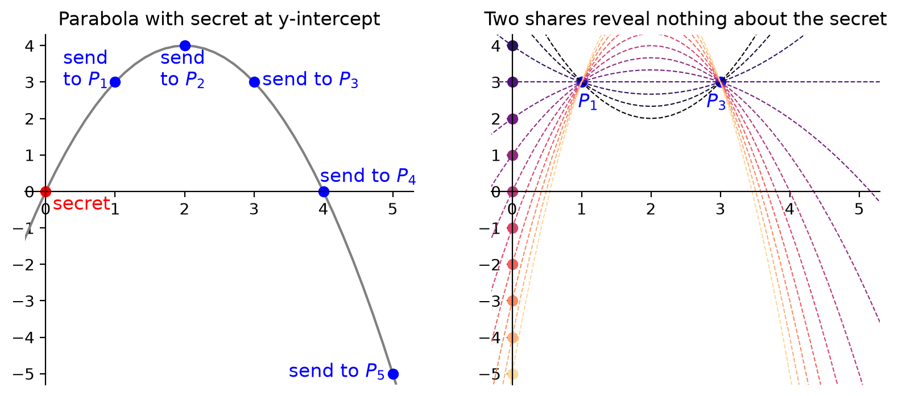
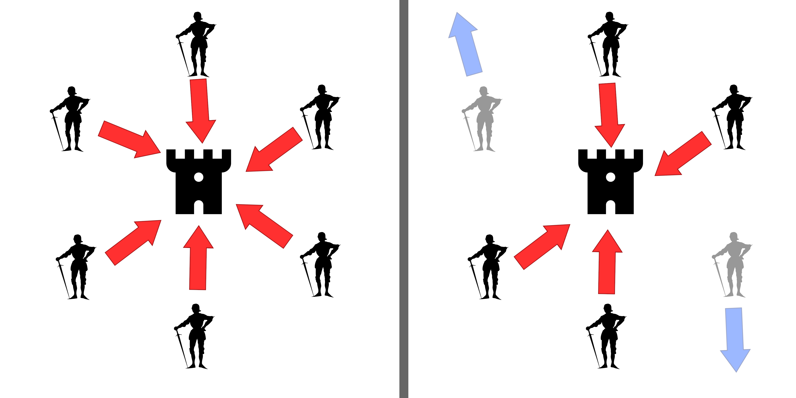
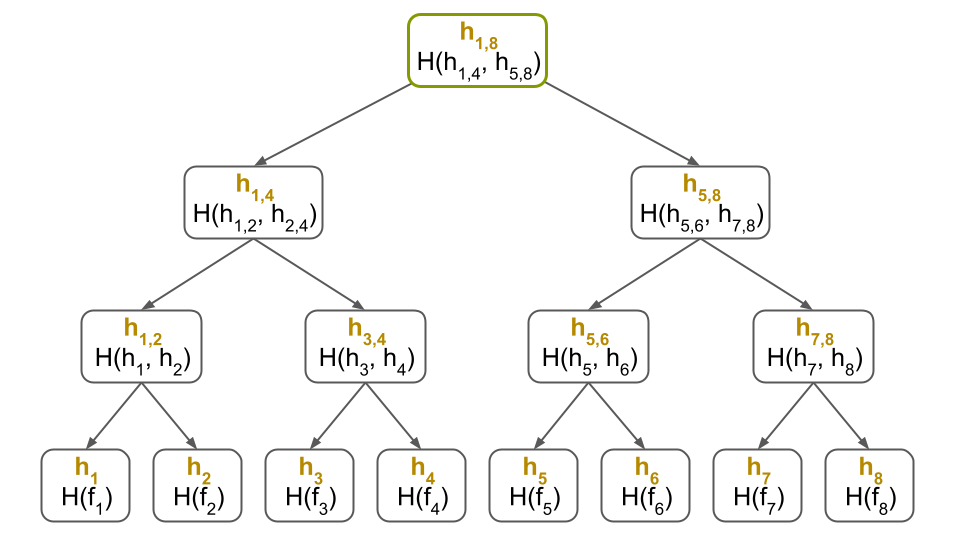
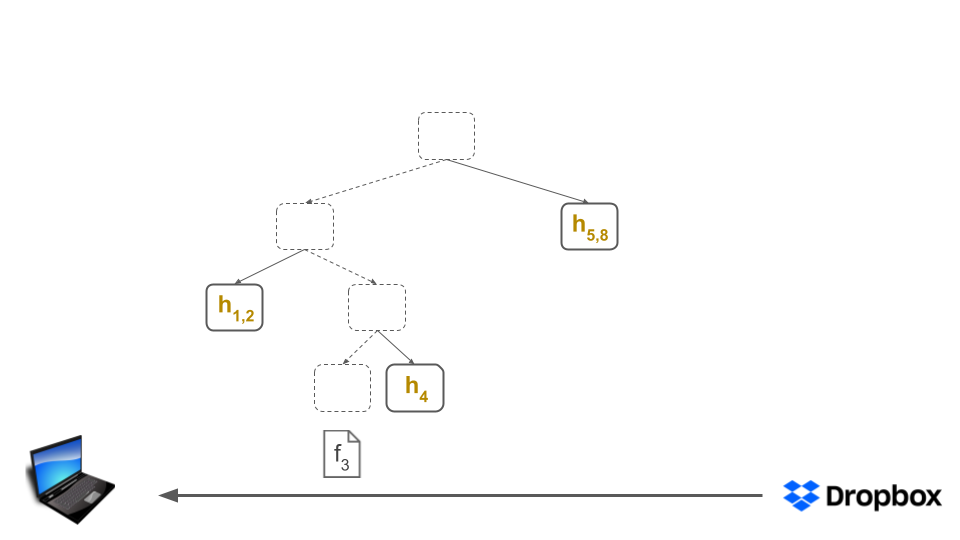

import numpy as np
s = 0 # the secret
xvals = np.linspace(-1, 6) # define x values
yvals = [] # define y values
for x in xvals:
yvals.append(s + 4 * x - x**2) # polynomial with secret at the y-intercept19 Verifiable MPC
Announcements
- Please pick up your card
- Fri 11/20: Lab 12 on Lindell-Pinkas section 2.1
- Fri 11/20 at 10pm: Exam 2 retries due
- Mon 11/23 at 8pm: Homework 8 due
Learning outcomes
By the end of today’s lecture, you will learn:
- How to construct Shamir secret sharing with any threshold for reconstruction
- How to construct verifiable secret sharing, and how it can be used as the basis for MPC
Review from last lecture
Unit 4 of the course is about protecting data science. My goal is to convince you that it is possible to conduct data science without data sharing.
Cryptographically secure multi-party computation (MPC) allows parties to:
- Work together to calculate \(y = f(\vec{x})\)
- Ensure that no coalition of \(\leq t\) computing parties can learn anything about the input data
Last time, we constructed several MPC protocols:
- Secure linear algebra with \(n = 2\) parties that tolerates \(t = 1\) passive eavesdropper Eve
- Secure computation with \(n = 3\) parties that tolerates \(t = 1\) passive eavesdropper Eve
- Secure computation with \(n = 4\) parties that tolerates \(t = 1\) actively malicious Mallory
As a building block toward MPC, we also studied \((t, n)\)-secret sharing protocols that:
- split a secret into \(n\) shares, such that any \(t + 1\) shares allow complete reconstruction of the secret
- satisfies \(t\)-perfect secrecy, which says that the shares held by a coalition of \(\leq t\) parties reveal no information about the secret
We constructed two ways to split a secret \(s\) that are perfectly secret against a passive eavesdropper Eve who sees \(t = n - 1\) shares. The last share serves as a ‘one-time pad’ to protect the secret \(s\).
- Boolean secret sharing: \(s = s_1 \oplus s_2 \oplus \cdots \oplus s_n\)
- Arithmetic secret sharing: \(s = s_1 + s_2 + \cdots + s_n \bmod{2^\ell}\)
19.1 Threshold cryptography
In some sense, we have designed the “best possible” secret sharing schemes.
- We can tolerate \(t = n-1\) adversarial parties, meaning that there is just one honest party
- If all \(n\) parties are adversarial, then cryptography does nothing since there is no honest party left to protect
But: should we always choose the highest confidentiality threshold \(t = n - 1\)?
We are writing in connection with the recent IACR 2025 election conducted using the Helios electronic voting system. … Three members of the IACR 2025 Election Committee acted as independent trustees, each holding a portion of the cryptographic key material required to jointly decrypt the results. This aspect of Helios’ design ensures that no two trustees could collude to determine the outcome of an election or the contents of individual votes on their own: all trustees must provide their decryption shares.
Unfortunately, one of the three trustees has irretrievably lost their private key, an honest but unfortunate human mistake, and therefore cannot compute their decryption share. As a result, Helios is unable to complete the decryption process, and it is technically impossible for us to obtain or verify the final outcome of this election. …
After careful consideration, we have decided that the only responsible course of action is to void this election and start a new election from scratch.
– Statement by the IACR 2025 election committee in November 2025 (emphasis mine)
There is an inherent tradeoff between:
- confidentiality against intentional adversaries
- fault tolerance against accidental mistakes
Shamir secret sharing
There is a more flexible way to design secret sharing to allow for any confidentiality threshold \(t\). It was discovered by Adi Shamir in 1979, and it is named Shamir secret sharing in his honor.
This secret sharing protocol uses polynomials to encode a secret. First, a quick math refresher.
Interactive question. How many points in space are required to uniquely determine a line?
- 1
- 2
- 3
- 4
Interactive question. How many points in space are required to uniquely determine a parabola?
- 1
- 2
- 3
- 4
This idea generalizes to higher-degree polynomials:
- Any 4 points uniquely define a cubic (i.e., a polynomial of degree 3)
- Any 5 points uniquely define a quartic (i.e., a polynomial of degree 4)
- …and so on
Shamir secret sharing uses this idea to encode a secret \(s\) with any confidentiality threshold \(t\).
split\(s\) by randomly choosing a polynomial \(p\) of degree \(t\) with \(p(0) = s\), and then form the shares \(s_1 = p(1)\), \(s_2 = p(2)\), …reconstructa secret from any \(t + 1\) shares using polynomial interpolation to compute \(p\), and then output the secret \(s = p(0)\)
Example. In order to split a secret among 5 parties such that any 3 of the 5 people can reconstruct the secret, randomly sample a polynomial of degree \(t = 2\) whose \(y\)-intercept is the secret.

Group signatures
This idea of threshold crypto can be applied directly to digital signature and encryption schemes as well. For today, let’s consider a threshold digital signature scheme to demonstrate that a group of \(n\) people have all agreed to sign a common message \(M\).
It is perfectly fine for each member of the group to produce their own digital signature, and to show all \(n\) of them to the world. EU-CMA guarantees that no individual’s signature within the group can be forged.
With Schnorr signatures, there is a better way for everyone to collectively produce a single signature for the entire group.
To see how this works, let’s revisit the signing protocol Sign\((x, M)\) for Schnorr signatures, given a secret key \(\color{red}{x}\).
- Choose a secret random exponent \(\color{red}{k}\) from the allowed set.
- Compute \({\color{green}{R}} = G^{{\color{red}{k}}}\).
- Compute \({\color{green}{e}} = H({\color{green}{R}}, {\color{green}{M}})\), where \(H\) denotes a cryptographic hash function.
- Compute \({\color{green}{s}} = {\color{red}{k}} − {\color{red}{x}} {\color{green}{e}}\).
- Output the pair \({\color{green}{\sigma}} = ({\color{green}{s}}, {\color{green}{e}})\).
Here are two observations about Schnorr signatures:
- The color-coding indicates which variables must be kept secret (the long-term secret key \(\color{red}{x}\) and one-time randomness \(\color{red}{k}\)) and which variables are safe to reveal
- Steps 2 and 4 of the protocol are linear, in the algebraic sense
Suppose that \(n\) signers each have secret keys \(x_1, x_2, \ldots, x_n\) with corresponding public keys \(Y_1, Y_2, \ldots, Y_n\). They refuse to share their secret keys with each other.
Even so, they can work together to produce a single Schnorr signature corresponding to a common public key \(Y = \prod Y_i = G^{x_1 + x_2 + \cdots + x_n}\). (Changes from ordinary Schorr signatures are shown in italics.)
Each signer chooses a secret random exponent \(\color{red}{k_i}\) from the allowed set.
Each signer computes \({\color{green}{R_i}} = G^{{\color{red}{k_i}}}\).
Every signer broadcasts \(\color{green}{R_i}\) and they all compute: \[\begin{align*} {\color{green}{R}} &= \prod {\color{green}{R_i}} = G^{\sum k_i} \\ {\color{green}{e}} &= H({\color{green}{R}}, {\color{green}{M}}). \end{align*}\]
Each signer computes \({\color{green}{s_i}} = {\color{red}{k_i}} − {\color{red}{x_i}} {\color{green}{e}}\). Then, every signer broadcasts \(\color{green}{s_i}\) and they all compute \({\color{green}{s}} = \sum {\color{green}{s_i}}\).
Output the pair \({\color{green}{\sigma}} = ({\color{green}{s}}, {\color{green}{e}})\).
You can check for yourself that this exactly matches the Schnorr signature protocol, thanks to linearity!
This is yet another instance of secure multi-party computation.
Different participating entities… [can perform] a finite number of pre-approved computations without transferring or otherwise revealing any private data to each other or anyone else.
Cryptocurrencies like Bitcoin use this idea to improve the security and fault tolerance of their secret signing keys. They can:
- Create many different signing keys \(sk_1, sk_2, \ldots, sk_n\)
- Store them in different places
- To receive money: give the combined public key \(pk\) to their friends
- To send money: use threshold signing among all the keys
This strategy provides resilience: if one key laptop is lost or stolen, the other keys still allow you to move your money.
19.2 Verifiable secret sharing
For the rest of today’s lecture, I want to discuss an alternative – and more foundational – way to build general-purpose MPC that is secure against an actively-malicious adversary Mallory.
\[\begin{eqnarray*} \text{passively secure SS} & \longrightarrow & \text{passively secure MPC} \\ \downarrow & & \downarrow \\ \text{actively secure SS} & \longrightarrow & \text{actively secure MPC} \end{eqnarray*}\]
Recall how arithmetic secret sharing works. Suppose that Alice has secret data \(x\) and converts it into a collection of \(n\) secret shares:
\[ x = x_1 + x_2 + \cdots + x_n \bmod{2^\ell}\]
For now, suppose that Alice doesn’t even want to compute over this data; she just wants to outsource the data to several cloud providers and reconstruct it at some later date.
Alice can disperse the message among the cloud providers by giving share \(x_i\) to provider \(i\)
Many months or years later, Alice can retrieve the secret data by fetching all shares and adding them together
This provides excellent data confidentiality: the cloud providers can perform their job of holding onto Alice’s data for a long time, but no coalition of \(n-1\) or fewer of them can ever learn the data.
However, the shares are mallable and the parties have no way to agree on what the correct shares are.
Suppose one party stores an incorrect share \(x_i^* = x_i + \Delta\)… either because this party is malicious or because Alice is malicious and gave an incorrect share from the start
Then, reconstruction will also be incorrect by \(\Delta\): \[x_1 + x_2 + \cdots + (x_i + \Delta) + \cdots + x_n = x + \Delta \bmod{2^\ell}\]
This is bad news…
- For Alice, because her data is corrupted and there is no way for her to pinpoint which cloud provider is to blame
- For the honest cloud providers, because Alice might refuse to pay them as a result of the data corruption, even though they properly did their job and held onto their share \(x_i\) for a long time
The problem
In other words, this problem looks similar to the Byzantine generals question. Alice is a leader and is providing information to many other parties.


The main differences here are that:
- We are adding confidentiality through secret sharing, and
- There are two stages to the protocol: a
dispersalstage and aretrievalstage
But the other trust questions from the Byzantine generals problem remain. Alice does not necessarily trust the other parties entirely, and they don’t entirely trust Alice either.
Question. How can we provide each party with an integrity guarantee? That is:
- During
dispersal, the cloud providers want to be convinced that they’re holding onto a share of a real secret that Alice will pay them for - During
retrieval, Alice wants to be convinced that the shares are correct, or be able to pinpoint which provider(s) are sending her bad shares
In fact, today’s approach will provide data confidentiality, integrity, and availability. That is, all computing parties have shares of the data, and they know that everyone else has shares too.
A construction
One way to solve this problem is to use Merkle trees. Recall that Merkle trees allow for uploading many files to the cloud, so that the cloud can prove that each file is part of the overall collection.


Concretely, here is a protocol that everyone can follow to disperse the shares and later retrieve the message.
In dispersal:
- Alice creates secret shares such that \(x = \sum x_i\), and builds a Merkle tree of all shares \(x_i\) (let’s call the Merkle root \(h\))
- Alice sends each cloud provider its share \(x_i\), the Merkle root \(h\), and a Merkle proof \(\pi_i\)
- The provider checks proof \(\pi_i\) to verify that the provided share \(x_i\) is consistent with the Merkle root \(h\)
- Alice saves the (small) Merkle root \(h\) and deletes everything else
In retrieval:
- Each cloud provider sends their share \(x_i\) and proof \(\pi_i\) to the leader
- Alice verifies each proof, and pays the corresponding provider if it’s correct
- If a provider has cheated, Alice detects the error and takes appropriate action (e.g., sue the cloud provider in court, or take money that the provider has placed in escrow in a smart contract, etc)
Interactive question. There is actually a bug in this protocol. What is it?
- A malicious cloud provider can confuse honest leader Alice by not saving its share after dispersal is complete
- A malicious cloud provider can confuse honest leader Alice by sending an incorrect share \(x_i\) during retrieval
- A malicious leader Alice can confuse honest providers by sending shares that are inconsistent with the Merkle root \(h\)
- A malicious leader Alice can confuse honest providers by sending different Merkle roots \(h\) to each provider
Answer. Actually, all of these responses indicate issues we will need to tackle today.
- Attacks
AandBby a malicious cloud provider are detectable by Alice thanks to the Merkle proof, but currently Alice has no recourse against this attack since all shares are required to reconstruct the secret (we can use Shamir secret sharing to add fault tolerance!) - Attack
Cis detectable by an honest provider, but the above pseudocode doesn’t say what the provider should do in response - Attack
Dis not detectable: if malicious Alice sends an incorrect Merkle tree root \(h^*\), then an honest cloud provider might verify that its share \(x_i\) is consistent with the wrong root and later be accused of cheating during theretrievalphase
We can fix this problem using techniques from earlier parts of this course! To reach agreement on the Merkle root \(h\), we can have the leader post the Merkle root \(h\) to a blockchain or run Byzantine Broadcast to disperse \(h\) to all providers.
Adding broadcast
In dispersal:
- Alice creates secret shares such that \(x = \sum x_i\), and builds a Merkle tree of all shares \(x_i\) (let’s call the Merkle root \(h\))
- Alice and providers conduct a Byzantine Broadcast to disperse the Merkle root \(h\) to all parties
- Alice sends each cloud provider its share \(x_i\), the Merkle root \(h\), and a Merkle proof \(\pi_i\)
- The provider checks proof \(\pi_i\) to verify that the provided share \(x_i\) is consistent with the Merkle root \(h\) and the provider refuses to participate further if this proof is incorrect
- Alice saves the (small) Merkle root \(h\) and deletes everything else
The retrieval stage can work the same as before. And in fact, the leader doesn’t even need to store the Merkle root \(h\) because it can just request it from all providers later: if there is an honest majority or a PKI, then the leader can distinguish the correct \(h\) from an incorrect one sent by a faulty cloud provider.
19.3 MPC from verifiable secret sharing
So far, this technique works to disperse secret data and then retrieve it later.
Let’s bring back the idea of computing over secrets.
Suppose the leader Alice dispersed two secrets \(x\) and \(y\) using this protocol… or maybe two different leaders dispersed two different secrets, such as their company’s payroll data
Now, we only want to retrieve the overall sum \(x + y\) of the two secrets, rather than retrieving \(x\) and \(y\) individually
As we saw last time: if we can take the sum of two secrets, then it is straightforward to extend the idea in order to perform any linear algebra operation over several secrets
Can we do this? Well… not quite.
- The good news is that the secret sharing protocol is linear, so the providers can just send shares \(x_i + y_i\) rather than separately sending each of the two summands
- The bad news is that the Merkle tree is not linear, so provider \(i\) cannot prove that it is sending the right value \(x_i + y_i\)
So let’s replace the Merkle tree with something else.
Using the discrete log problem, we can create a new way to commit and prove properties of the secrets that is amenable to computation.
Commitments from discrete log
Recall that a message commitment is the digital analog to putting a written message inside of an envelope and placing it on a table. Commitments satisfy two security requirements.
- Binding: even against a malicious committer, it is infeasible for the committer to show a different message \(m^*\) in the
openstep than the message \(m\) that it originally used during thecommitroutine.Mallory Bob \(\quad \overset{c}{\longrightarrow} \quad\) - Hiding: even against a malicious receiver, from only the commitment \(c\) it is infeasible to learn anything about the message \(m\).
Alice Mallory \(\overset{c}{\longrightarrow}\)
Question. Is a Merkle tree a message commitment?
Answer. No… but it’s close.
- It satisfies binding due to collision resistance
- It can satisfy hiding only if the messages are uniformly random (otherwise Mallory can guess-and-check the hash preimages)
Cryptographic secret shares are uniformly random! So perhaps “hiding for random messages” is a sufficient requirement for today.
Feldman commitments
Let’s construct another commitment protocol that is binding and hiding for uniformly random messages. As is the norm in this course by now, we will construct commitments based on the hardness of some math problem, so that they are easy to compute but hard to invert.
Specifically, we will use the hardness of the discrete log problem. Recall that this problem states that for a publicly-known \(g\) and a uniformly random choice of \(x\):
- \((g, x) \mapsto h = g^x\) is easy to compute, but
- \((g, h) \mapsto x = \log_g(h)\) is hard to compute
Here is a commitment protocol designed by Paul Feldman in 1987.
commit(m): create the commitment \(c = g^m\)open(c, m): reveal \(m\), so that the receiver can calculate \(g^m\) itself and check that it is equal to \(c\)
This commitment protocol achieves:
- Binding, because there is a one-to-one mapping between messages \(m\) and commitments \(c\), so it is impossible to open to any other message
- Hiding for uniformly random messages, due to the discrete log assumption
Additive homomorphism
We can use commitments to resolve the conundrum from before! As a reminder: we wanted to find a way to disperse several secrets, say \(x\) and \(y\), and then provide the option for the cloud providers to retrieve only the sum \(x + y\).
Specifically, we will use Feldman commitments to construct a new verifiable secret sharing protocol. The key insights here are that:
- Each secret share individually is chosen uniformly at random, so we can use them in Feldman commitments
- Feldman commitments are linear… well, sorta. Specifically, given the commitments to two messages \(g^{m_1}\) and \(g^{m_2}\), we can compute the commitment to their sum \(g^{m_1} \times g^{m_2} = g^{m_1 + m_2}\)
Technically, this is not linearity in the sense of linear algebra, because we need to multiply the commitments in order to add the underlying messages. So let’s give this property a fancy new name: additive homomorphism.
Putting everything together
Let’s see how to build a verifiable secret sharing scheme that allows for secure addition.
Here is a new verifiable secret sharing protocol that we can use to disperse a secret over \(n\) cloud providers. As a starting point, we assume that there are \(n\) public constants \(g_1, g_2, \ldots, g_n\) that everybody knows before the protocol starts; importantly, they have nothing to do with our secrets.
In dispersal:
- The leader creates all secret shares such that \(x = \sum x_i\), and calculates a commitment \(c_i = {g_i}^{x_i}\) to each share. Let’s call the vector of commitments \(\vec{c} = [c_1, c_2, \ldots, c_n]\).
- The leader and providers conduct a Byzantine Broadcast to disperse all commitments \(\vec{c}\).
- Then, the leader sends each cloud provider its share \(x_i\). The provider can check for itself that \({g_i}^{x_i}\) equals the public commitment \(c_i\), and refuses to participate further if the value is incorrect.
- The leader saves the commitment vector \(\vec{c}\) and deletes everything else.
Suppose the leader has dispersed two secrets \(x\) and \(y\) with corresponding commitment vectors \(\vec{c}_x = [g_i^{x_i}]_{i \in \{1, \ldots, n\}}\) and \(\vec{c}_y = [g_i^{y_i}]_{i \in \{1, \ldots, n\}}\). The providers can securely calculate a verifiable secret sharing of the sum \(z = x + y\) by:
- Adding their individual shares \(z_i = x_i + y_i\).
- Componentwise-multiplying \(\vec{c}_x\) and \(\vec{c}_y\) to form a new vector of commitments \(\vec{c}_z = [g_i^{x_i} g_i^{y_i}]_{i \in \{1, \ldots, n\}}\). This works thanks to additive homomorphism!
Retrieval of any secret, say \(z\), works similarly as before:
- Each cloud provider sends their share \(z_i\).
- The leader can check that \({g_i}^{z_i}\) equals the appropriate commitment inside the vector.
So: we can retrieve \(z\) without ever learning the summands \(x\) and \(y\) individually!
While I do not have time to show it today, it is also possible to:
- Securely multiply two VSS secrets, and therefore to do verifiable secure computation of any data analysis!
- Create a short Feldman commitment that is just 32 bytes in length (like a Merkle root), rather than the current vector of \(n\) commitments
- Create a smart contract to automate payment from the leader to each cloud provider upon delivery of the secret share \(z_i\)
- Perform all of this over an asynchronous communication network that can have arbitrary delays
To my knowledge, the fastest asynchronous verifiable secret sharing protocol was created by former BU PhD student Nicolas Alhaddad, former BU undergrad Ziling Yang, and me. If you’re interested, here is the research paper with all of the details: cic.iacr.org/p/1/4/3